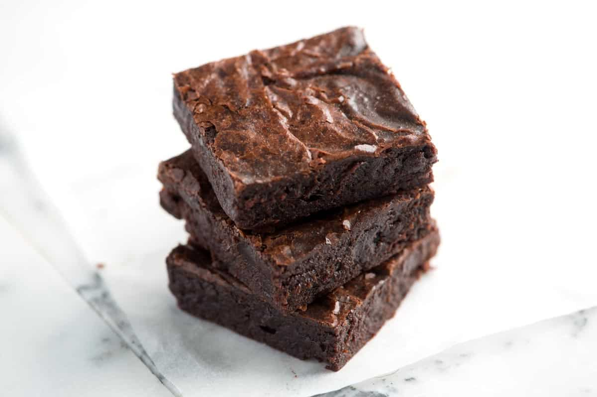

>
Odin Recipes- Brownies
Brownies

Description
Enjoy the best brownies you've ever had with this take on the
chocolately treat.
Ingredients
- 1/2 cup of butter
- 1 cup of white sugar
- 2 eggs
- 1 teaspoon of vanilla extract
- 1/3 cup of unsweetened cocoa powder
- 1/2 cup of flour
- 1/4 teaspoon of salt
- 1/4 teaspoon of baking powder
- Frosting
- 3 tablespoons of softened butter
- 3 tablespoons of unsweetened cocoa powder
- 1 tablespoon of honey
- 1 teaspoon of vanilla extract
- 1 cup of confectioners' sugar
Steps
- Preheat oven to 350 degrees F
- Grease and flour square pan
- In a large saucepan, melt 1/2 cup of butter
- Remove saucepan from heat and stir in sugar, eggs, and vanilla
- Beat in cocoa, flour, salt, and baking powder
- Spread batter into prepared pan and bake for 25 to 30 minutes
- For frosting, combine butter, cocoa, honey, vanilla, and
confectioners' sugar and stir until smooth. Frost brownies while warm.
This recipe is courtesy of allrecipes.com